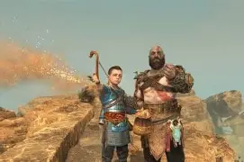
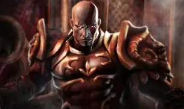
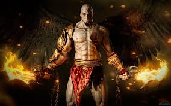

Trabalhando com imagens Quer saber mais sobre gatos? clique aqui.
Kratos, como deus da guerra, passou a invadir e destruir várias cidades com a ajuda do exército espartano, e partiu para Rodes em uma dessas viagens. Zeus, no entanto, traiu Kratos em segredo e transferiu alguns de seus poderes para o gigantesco Colosso de Rodes, que criou vida e tentou matar Kratos. Nisso, Zeus interferiu novamente e ofereceu a Kratos a Lâmina do Olimpo e o enganou, dizendo que se ele transferisse todos os seus poderes divinos para a espada, alcançaria seu máximo potencial. Kratos, iludido, faz o que Zeus manda e derrota o Colosso de Rodes, porém, enquanto o deus da guerra se vangloria da vitória, a mão do Colosso o atinge. Nisso, Zeus surge e revela sua traição, recuperando a Lâmina do Olimpo e assassinando Kratos. Embora ele tenha superado todos os obstáculos, Kratos ficou chocado com a traição de Zeus e jurou vingança quando morreu. Kratos caiu no submundo, mas foi resgatado pela Titã Gaia. Banida para o Tártaro com os outros titãs sobreviventes após a Primeira Grande Guerra. Ela explica que ela ajudará ele a ter sua vingança contra Zeus. Kratos, alimentado pela raiva de sua traição, concordou em ajudar os Titãs e foi instruído a encontrar as Irmãs do Destino, que são capazes de devolvê-lo ao momento da traição de Zeus. Kratos tornou-se determinado e totalmente implacável — na busca de seu objetivo, ele feriu um titã, matou vários heróis gregos sem hesitação e deliberadamente sacrificou dois eruditos.



A origem do cachorro doméstico é um assunto polêmico há séculos, cheio de incógnitas e falsos mitos. Embora atualmente ainda existam dúvidas a serem resolvidas, a ciência oferece respostas muito valiosas que ajudam a entender melhor por que os cachorros são os animais de estimação por excelência ou por que, diferentemente dos lobos ou gatos, essa espécie é a mais domesticada.
inicio